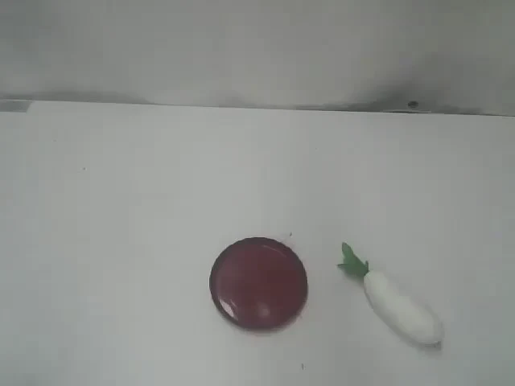
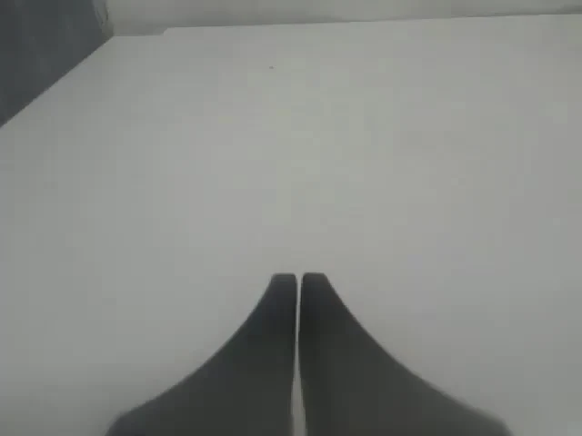
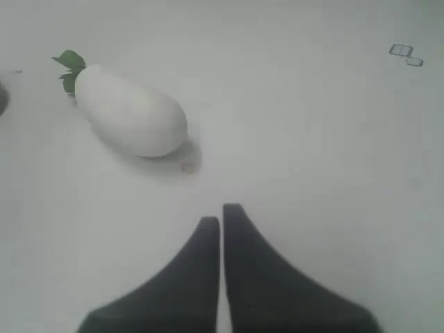

Connect the views
Epipolar-constrained retrieval aggregates dense DINOv3 features into a global state, linking geometrically admissible observations across cameras.
GEOMETRY-AWARE ROBOT LEARNING
One world.
Every view.
Multiple View Geometry-Aware World-Action Modeling for Robotic Manipulation
Explicit multi-view geometry.
No additional embodied pretraining.



Geometry that
makes a difference.
LIBERO
40 tasks · average successRoboTwin 2.0
50 tasks · average successReal world
137 / 150 successful trials01 / IN THE REAL WORLD
Grasping, precise alignment, and multi-stage interaction on a dual-arm Cobot Magic. One policy, three tasks.
50 evaluation trials per task. The external recording is separate from the three camera observations supplied to the policy. Videos show selected successful executions.
A CLOSER LOOK
Selected successes and failure cases.
10× speed as presented in the source demos.
These are representative rollouts, not matched initial-state tests. The reported overall success rates use the same 150-trial evaluation protocol: MVG-WAM 91.3%, FastWAM-Joint 78.7%, π0.5 89.3%, and MVG-WAM without the epipolar residual 87.3%.
02 / THE GEOMETRY BEHIND THE ACTION
Synchronized observations are projections of the same physical world. MVG-WAM makes those geometric relationships explicit inside a world–action model.
Cross-view correspondences
constrained by calibrated geometry
Epipolar-constrained retrieval aggregates dense DINOv3 features into a global state, linking geometrically admissible observations across cameras.
Jointly encoded VGGT-Ω registers provide view-indexed geometric states. Camera-aware routing supplies each video region with its matching context.
Multi-horizon metric-depth supervision grounds the video representation during training. The depth decoder is removed during action rollout.
RGB + language + proprioception + camera calibration
Action sequenceGeometry is encoded once per observation and reused across denoising steps. No depth decoding during control.World–Action Models (WAMs) couple visual dynamics with action prediction, bringing the rich priors of pretrained video models to robotic manipulation. However, their multi-view interfaces typically tile images or concatenate tokens, leaving the geometric relationships among synchronized cameras implicit. This makes it harder to connect global scene context with the local geometry required for interaction. We introduce the Multi-View Geometry-Aware World–Action Model (MVG-WAM), which organizes these observations as related projections of one physical world rather than separate images on a canvas. Our model combines an epipolar-constrained global state with view-indexed geometric states jointly inferred from synchronized observations. Camera-aware routing supplies each video region with its corresponding geometric context and the shared global state, explicitly structuring the representation used for action prediction. We further ground the geometry-aware representation in metric scale through multi-horizon future-depth supervision, without requiring depth decoding during action rollout. MVG-WAM achieves average success rates of 99.1% on LIBERO and 92.07% on RoboTwin 2.0, demonstrating competitive performance across both benchmarks. Real-world experiments on Cobot Magic further demonstrate a 91.3% success rate across 150 trials spanning three manipulation tasks.
03 / INSIDE THE SIMULATOR
Explore six paired demonstrations from RoboTwin 2.0 and LIBERO. Each pair shows MVG-WAM alongside FastWAM-Joint.
Selected examples illustrate successful MVG-WAM rollouts and baseline failures from the presentation. Quantitative results below summarize the full benchmark evaluation.
THE FULL PICTURE
Success rates (%) reported in the paper. Additional embodied pretraining is shown separately.
04 / WHAT THE MODEL LEARNS
Short-horizon predictions preserve sharper object boundaries and more coherent gripper–object geometry in the paper’s qualitative examples.
+3.74 dB over FastWAM-Joint
Compared with 0.842 for FastWAM-Joint
Metric information retained in the denoising representation
625 clips from 125 validation trajectories. Depth readout uses noisy future target latents and is a representation diagnostic, not current-observation-only depth forecasting.
05 / EXPLORE THE WORK
Read the complete method, evaluation protocols, and analysis in the manuscript.
Anonymous manuscript · author information pending.
@misc{mvgwam,
title = {MVG-WAM: Multiple View Geometry-Aware
World-Action Modeling for Robotic Manipulation},
author = {{Anonymous Authors}},
note = {Manuscript},
url = {https://bobc-123.github.io/MVG-WAM/}
}